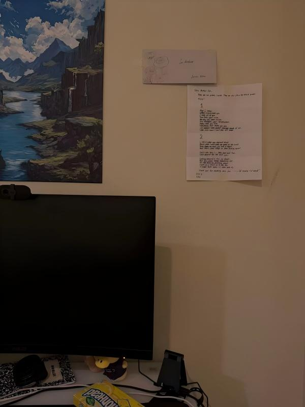
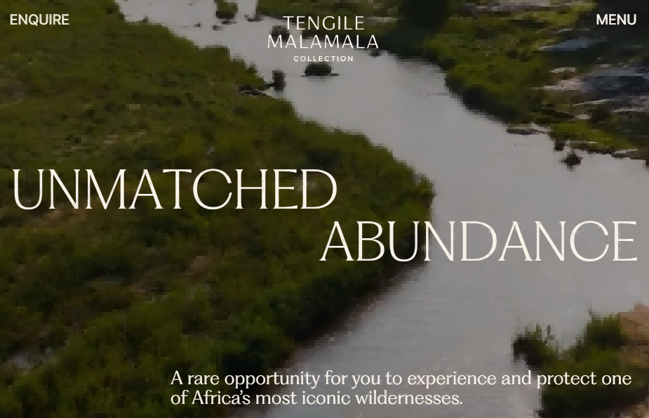
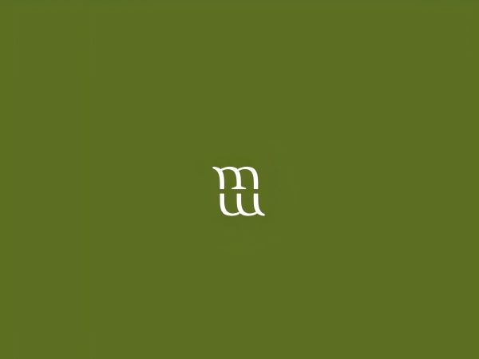

The images are about things about the Z-line bus in Davis, either window views on the bus, inside of the bus, or the view near a stop of the Z line route. I think the timing of when the photos were taken is interesting. All of the three photos are in the morning or early morning, which I didn't recognize myself, and I rather thought they were night views. I think this tells the class schedule and transportation choice of this student.
The most obvious aspects are the sky and the sun, which made me infer that this project is about landscape. The most mysterious part is the fact that the Z-line bus goes through many places in Davis, including campus, downtown, residential areas, and even some shopping areas.
If thinking of a new topic for these photos, I'd suggest associating emotions with the Z-line bus. Since Lia has been taking this bus daily for three years, I assume there must have been some times when she thought about something special or saw something memorable from either her surroundings or her own devices. The photos could include screenshots of a thought-provoking matter, a drawing of some strangers on the bus, or interesting or unusual things outside witnessed through the window.
Part 2: One Interesting Image in My Project

This image was taken at my boyfriend's place, with hints of candies, a desktop, a phone stand, and all the decorations indicating that this is a young person's desk. In this image, an envelope and a letter are pinned on the wall near his desk, where he stays the longest at home despite sleeping. The letter with the envelope is a gift I gave to him. He pinned them on the wall to express how he likes and cares about my efforts and feelings.
I think it's a sincere and sweet deed to pin a gift letter on the wall because it shows how much you care, which goes beyond words like politely saying thank you. It will always be part of my core and sweet memories that I would look at when I couldn't sleep late at night to soothe myself or when I'm depressed to cheer me up.
My collection tells that I cherish those memories in daily life when I was with families or loved ones while I was being cherished. And from these images, it also obviously showed how I was cared for, with either their smiles when they look at me or things they do in the images. I think these images are suitable enough to represent my topic and express my ideas.
Visual Thinking Strategies Research
Date: 10/26/2026


Hover to see how the preloader element works.
Tengile MalaMala Collection is a wild luxury hotel group that features luxury safari experiences in Greater Kruger and Sabi Sand. This website's preloader element contains a pure green background with a logo slowly appearing. I think it gives me a sense of opening a physical brochure introducing their featured wild animals, dining experiences, and overall experiences. The pure green color clears my head and lets me expect what's going to be shown peacefully.
Hover to see the buttons.
The small buttons that appear when I hover on the photos make it clear what to expect after clicking and make it easier to compare the options. However, this feature also makes me confused about the meaning. I think it works as interactive decoration with no clear value.
Overlays Design Pattern Research
Date: 10/15/2026
Modals seem much more complicated, with much content to consider when I start to think about designing them. It is obvious that a title and button label are necessary and easy to think of. Nevertheless, the shadow part in the background is often ignored by me, as well as the close button. I have never thought about different ways with buttons/keys to close the modal, but when I encounter some badly designed modals where I can't click outside the window to escape, I find it annoying.
The button labelings can be confusing. Some companies design their buttons not as actionable, often misleading users to click on the wrong one to try to keep users, which is a bad practice and will be likely to achieve the opposite results.
Research Form Design
Date: 10/05/2026
The article "Best practices for form design" mentions plenty of form design practices to consider for a better website conversion rate. Long forms with not enough visual assistance or hints do give a tough experience for users, leading to abandonment when filling a form. Personally, being able to see my progress in a progress bar does give me more comfort by giving me an idea of where I am. Sometimes, I encounter badly designed forms that do not give any hint on filling out the password field when creating a new account. At that time, I often doubt if there is anything wrong with my internet or device, which confuses me for a while. In these cases, I would like to learn and apply these key points to my form design to create comfortable experiences for myself and my users.
I think the Roblox sign-up form exemplifies the best practices in the forms I have interacted with recently. It asks for your birthday first, so if you try to set the username field before filling out the birthday field, it will give you a hint in red under the username field, saying, "Birthday must be set first." Also, I like how simple the password requirement is—"at least 8 characters," as it does not require special combinations but anything between 8 and 200 characters.